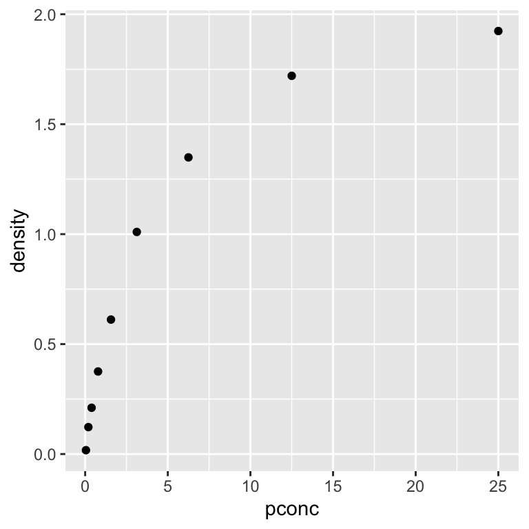
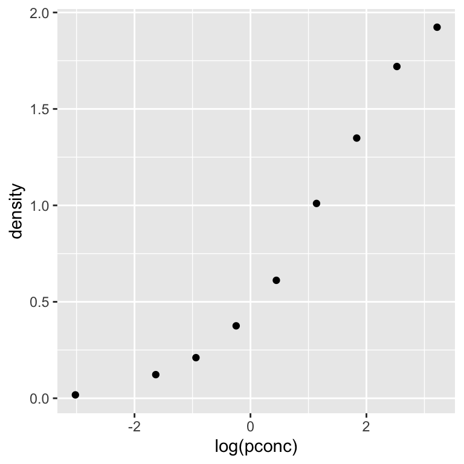
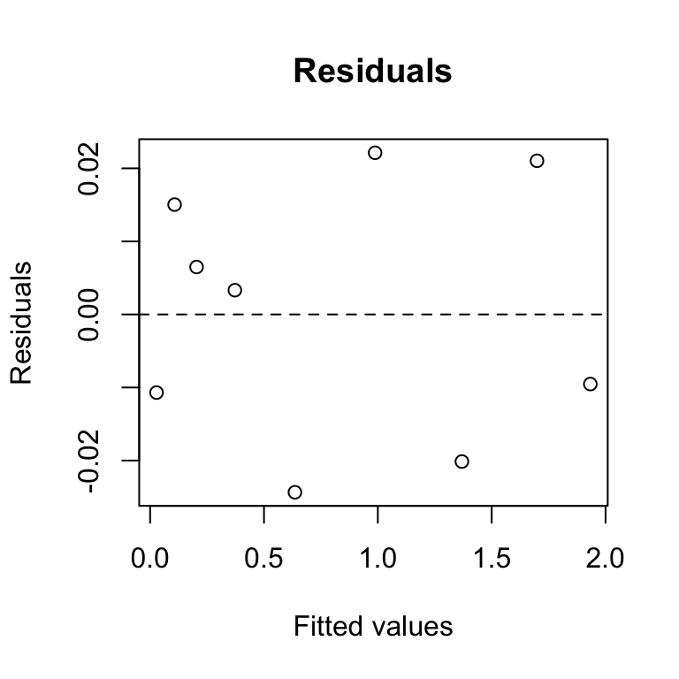
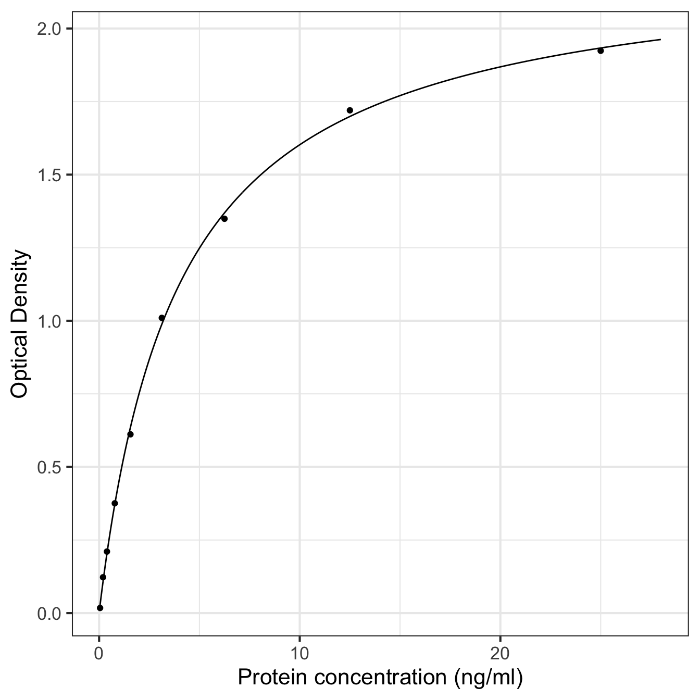
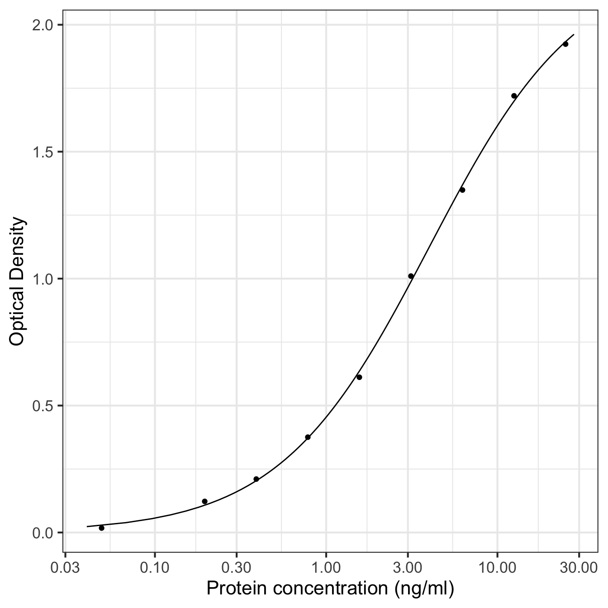

Chapter 24 Non-linear regression in R
Our goal in this chapter is to learn how to work with non-linear regression models in R. We’ll start with the example problem and the data, then discuss model fitting, evaluating assumptions, significance testing, and finally, presenting the results.
24.1 Introduction
The enzyme-linked immunosorbent assay (ELISA) is a standard assay for detecting and quantifying soluble substances such as proteins, antibodies, and hormones. The direct form of ELISA works as follows:
- Antigens from a test sample are attached to a surface, and a matching antibody is applied to bind the antigen.
- The antibody is linked to a reporter enzyme, and any unbound antibodies are removed.
- The reporter enzyme’s substrate is added, and the subsequent reaction produces a detectable signal if there was binding.
The activity of the reporter enzyme is measured using spectrophotometry, such that the concentration of the target substance is associated with a standardised optical density measurement.
A biochemist is developing direct ELISA for a new recombinant protein. To investigate how well it works, she ran the assay using a series of standardised protein concentrations (measured in \(ng\ ml^{-1}\)). The next step is to quantify how the optical density readings depend on protein concentration.
We will be using this new data set to demonstrate how to conduct non-linear regression in R. The data live in the ‘ELISA.CSV’ file. The code below assumes those data have been read into a tibble called ELISA.CSV. Set that up if you plan to work along.
24.1.1 First steps
We start by using glimpse to see which variables reside within elisa_assay:
glimpse(elisa_assay)## Rows: 9
## Columns: 2
## $ pconc <dbl> 0.04882812, 0.19531250, 0.39062500, 0.78125000, 1.56250000, 3.…
## $ density <dbl> 0.017500, 0.122500, 0.210500, 0.375500, 0.611500, 1.010000, 1.…The first column (pconc) contains the information about about the protein concentration (\(ng\ ml^{-1}\)). The second column (density) contain the optimal density measurements registered by the assay. These are both numeric ratio variables.
Our goal is to predict optimal density from protein concentration, meaning density will be the response variable and pconc will be the predictor variable.
24.1.2 Visualising the data
We need to visualise the data to help us understand it. A scatter plot is a reasonable option here:
ggplot(elisa_assay, aes(x = pconc, y = density)) +
geom_point()
Since density will be the response and pconc will be the predictor, we place them on the \(y\) and \(x\) axes, respectively. The plot reveals the form of the relationship between the two variables. The plot suggests there is a tight, non-linear positive association between optical density and protein concentration. It is obvious we need a non-linear model as well — the relationship cannot be captured by a straight line.
The plot also contains a clue about how to analyse these data. Look carefully at the spacings between successive protein concentrations. These are not even. Instead, most increments are associated with a rough doubling of the lower value. When we see a sequence of values that arise by repeatedly multiplying by a factor, it is often a sign they should be analysed on a logarithmic scale.
With that in mind, let’s make a new scatter plot using a natural log transformation of protein concentration:
ggplot(elisa_assay, aes(x = log(pconc), y = density)) +
geom_point()
This shows that the relationship between optical density and log protein concentration is initially shallow, steepens toward the middle, and then becomes more shallow again at higher protein concentrations. In other words, the relationship follows an “S”-shaped sigmoid function.
There are a many different sigmoid functions that can describe this kind of relationship. We’ll work with the most the commonly-used one: the logistic function.
24.2 Model fitting
Carrying out non-linear regression analysis in R is similar to simple linear regression. The first step involves fitting the model to find the best fit line and calculating various bits of additional information needed to use the model. However, since we are no longer in linear model land we cannot use lm to do this.
There are many different packages and functions for working with non-linear models in R. We will use the base R nls function because it is simple, flexible and readily available.
How does nls work?
The letters in nls stand for ‘non-linear least squares’. This is a reference to the method used to identify the best-fitting curve through the data. Non-linear least squares aims to find the parameter set that minimises the ‘sum of squares’ of the model residuals (i.e. the residual sum of squares). If that sounds familiar, it is because this is the same idea that underpins how general linear models like regression and one-way ANOVA work. The only difference is that non-linear modelling tools like nls has to use fancier algorithms than lm to cope with the non-linearity in the parameters.
Before we use nls to fit the logistic model to the ELISA data, we need to understand the model parameters. In mathematical terms, the logistic model can be written down like this:
\[y = \frac{\phi_1}{1 + e^{ (\phi_2 - x) / \phi_3 }}\]
The model has three parameters:
- \(\phi_1\) is the value the function approaches as the predictor variable \(x\) gets very large (i.e. the asymptote). Inspection of the scatter plot suggests this is some number greater than 2 in the ELISA example.
- \(\phi_2\) is the value of \(x\) at which the logistic function is exactly half its maximum value (i.e. the midpoint). This value is also the inflection point, i.e. where the rate of change is greatest. It looks like this is roughly 1 in the ELISA example.
- \(\phi_3\) is a scale parameter that controls how rapidly the function transitions from low to high values as \(x\) changes. It is the inverse of the rate of change of the function at the inflection point. This one is a little harder to guess from plot.
Now that we know a bit about how the logistic model works we can fit it to the ELISA data. There are a few different ways to do this with nls. The easiest looks like this:
elisa_mod1 <-
nls(density ~ SSlogis(log(pconc), phi_1, phi_2, phi_3),
data = elisa_assay)We had to assign at least two arguments:
The first argument is a formula because it includes a ‘tilde’ symbol:
~. The variable named to the left of the~is the response variable (density). The part to the right of the~defines the non-linear model. We will come back to how this works this in a moment. For now, notice that the the predictor variable (pconc) appears on the right-hand side of the formula. Just as with anlmmodel, it is essential to ensure the predictor and response variables are in the correct position when setting up a non-linear regression model.The second
dataargument is just the name of the data frame or tibble object that contains the two variables listed in the formula (elisa_assay).
What is the SSlogis function doing in the formula? The ‘logis’ part of the name tells nls to fit a logistic function to the data. What about the ‘SS’ part? That stands for ‘self-starting’. Non-linear models can be tricky to work with because the algorithms that search for the best fit curve are prone to failure in some circumstances. One such circumstance arises when the algorithm starts its search with a set of parameters that are too far away from their best fit values. The self-starting functions automatically identify good starting values so that nls users don’t have to worry about that problem.
That leaves us with the arguments of SSlogis to worry about:
The first argument is the predictor variable. Our predictor variable is protein concentration (
pconc). However, since we decided to model the dependence of optimal density on the logarithm of protein concentration, we applied thelogfunction topconcto ensure the model works on the correct scale.The next three arguments are the names used to label the model’s three parameters. We can use any name we like for these arguments. We chose
phi_1,phi_2andphi_3to match the equation above, but we could have used something likeAsym,xmidandscalto reflect the meaning of each parameter (those happen to be the labels used in theSSlogishelp file).
Keep in mind that SSlogis uses the position of the three names in the argument list to match them with their roles in the logistic function. If we swapped phi_1 and phi_2 around in SSlogis, the labels in the model output would no longer match their role in the equation. That would be very confusing because \(\phi_1\) would be labelled phi_2 and \(\phi_2\) would be labelled phi_1 in the model output.
Now we have fitted the logistic model to the ELISA data and called the resulting model object elisa_mod1. What happens if we print this model object to the console?
print(elisa_mod1)## Nonlinear regression model
## model: density ~ SSlogis(log(pconc), phi_1, phi_2, phi_3)
## data: elisa_assay
## phi_1 phi_2 phi_3
## 2.247 1.384 1.009
## residual sum-of-squares: 0.002415
##
## Number of iterations to convergence: 0
## Achieved convergence tolerance: 1.019e-07This prints out a summary of the fitted model, the values of the best-fit parameters, and a bit of technical information that we can usually ignore. Notice that the labelling of the parameters reflects the names we provided to SSlogis.
We often fit non-linear models because their parameters relate to a particular biological, chemical or physical process. When that is the case, it is important to think about what those numbers mean. For example:
- The asymptote of the fitted function (\(\phi_1\)) is about 2.2 units. This is the maximum optical density value produced by the assay when it is saturated with protein.
- The midpoint of the fitted function (\(\phi_2\)) is reached at around 1.4 \(ng\ ml^{-1}\). This is the threshold protein concentration at which the optical density is half its maximum.
- The inverse of the rate of change at the midpoint value (\(\phi_3\)) is about 1.0 \(ng\ ml^{-1}\). We can use this to understand the sensitivity of the ELISA. When this value is very small, it means there is a tight threshold in the response.
24.2.1 Custom functions
There are self-starting functions for many common non-linear relationships. If one is available for the model we want to use, it is a good idea to use it. But what do we do if there is no self-starting function for the relationship we want to model? In those circumstances, it is up to the user to define the curve.
This is relatively easy. Here is an example of how to set up and fit the logistic model without using its self-starting function:
elisa_mod2 <-
nls(density ~ phi_1 / (1 + exp((phi_2 - log(pconc)) / phi_3)),
data = elisa_assay,
start = list(phi_1 = 2, phi_2 = 1, phi_3 = 1))Now we have to set three arguments:
The first argument is a formula with the response variable (
density) to the left of the~. The part to the right of the~defines the model we want to fit, but we have to explicitly define the curve in terms of the relevant R functions. This is easy as long as we understand how to express mathematical calculations in R.As usual, the
dataargument is again the name of the data frame or tibble object containing the variables listed in the formula (elisa_assay).The
startargument provides some starting parameter values fornlsto use when it begins searching for the best-fit curve. We have to provide a starting value for every parameter listed in the formula in something called a list. We do this by providing a series of comma-separated name-value pairs to thelistfunction.
A user must provide starting values to the nls function when not using a self-starting function. However, we can’t choose any numbers we like because nls will fail if they generate a curve that is too far away from the best fit. How do we choose reasonable starting values? By looking at the data. We did that earlier when we discussed how the logistic model works. There’s no simple shortcut for choosing starting values. We have to understand how a model’s parameters relate to the relationship in the data. The good news is for simple models like the logistic function, the initial guess does not need to be that close to the best fit parameters for nls to work.
Which self-starting functions are available?
Many standard non-linear curves have been implemented as self-start functions:
SSasympis a three-parameter asymptotic model that allows the curve to go through a non-zero intercept.SSasympOffis another version of the asymptotic model that uses a different mathematical parametrisation.SSasympOrigis the two-parameter version of the asymptotic model that forces the curve to go through the origin.SSbiexpis a four-parameter model that creates a non-linear curve by adding two exponential curves.SSfplis a four-parameter model that generalises the logistic function to allow a non-zero lower bound.SSgompertzis the three-parameter Gomertz growth curve that provides an alternative choice for S-shaped relationships.SSgompertzis the four-parameter Weibull growth curve that provides another alternative to the logistic model.SSmicmenis the two-parameter Michaelis-Menten curve for modelling enzyme kinetics.
The easiest way to quickly learn about these is to navigate to their help page (e.g. ?SSmicmen) and run all the example code at the end. That code creates a plot showing the shape of the curve along with some annotation revealing how the parameters control its shape.
24.3 Checking the assumptions
Like any parametric technique, non-linear regression makes assumptions about the nature of the data:
- Independence. The residuals must be independent, such that each residual does not depend on any others.
- Measurement scale. The response and predictor variables are both measured on an interval or ratio scale.
- Measurement error. The values of the predictor variable are determined with negligible measurement error.
- Shape. The general relationship between the predictor and response variable follows the assumed curve.
- Constant variance. The variance of the residuals is not related to the value of the predictor variable.
- Normality. The residuals are drawn from a normal distribution.
These are almost identical to the assumptions of simple linear regression. The only practical difference is that now we need to assess whether the assumed curve is a good fit to the data rather than worrying about whether the relationship follows a straight line.
The experimental design and data collection protocols affect the first three assumptions. We can only evaluate these by thinking about where the data come from. The remaining assumptions can be checked by using the fitted values and residuals from the fitted model to construct regression diagnostic plots.
The fitted values and residuals of a non-linear regression are defined in the usual way:
- The fitted values are the predicted values of the response for each value of the predictor variable from the best-fit model.
- The residuals are the deviations of each value of the response variable from their corresponding fitted values.
Base R has no simple facility for creating diagnostic plots with nls models. Fortunately, there is a package that makes these. This is called nlstools. Once installed, we need to load and attach nlstools to use it:
library(nlstools)Creating a regression diagnostic plot with nlstools is then a two-step process. To begin, use the nlsResiduals function to extract the required information from the fitted model object:
elisa_mod_diag <- nlsResiduals(elisa_mod1)We then plot the object produced by nlsResiduals to make different types of diagnostic plot. For example, we can look at the association between the residuals and fitted values from the model as follows:
plot(elisa_mod_diag, which = 1)
This plot allows us to evaluate whether the shape of the relationship follows the assumed curve. There should be no obvious relationship between the residuals and fitted values if the non-linear model is appropriate for the data. There is no obvious pattern in that plot, indicating that that logistic model is a good fit for the ELISA data.
Setting which to 3 creates a scale-location plot to assess the constant-variance assumption. Setting which to 6 creates a normal probability plot to assess the normality assumption. We won’t make these here. They can be interpreted in the same way as the corresponding plots for a simple linear regression model. Refer to the ‘Checking and Fixing Models’ section of the book for a reminder of how to use regression diagnostic plots.
24.4 What about significance tests?
We know how to set up significance tests for linear models to assess whether a regression slope differs from zero or a set of means are different. Conceptually similar tests can be constructed for non-linear regression models. However, these kinds of analyses are more complex. There are two main reasons for this:
Comparing a non-linear model across treatments or some other set of groups requires us to investigate changes in the shape of the curve. These changes may involve differences in one or several model parameters. Deciding which comparisons to make and setting these up is not entirely straightforward.
Non-linear models often involve dependent data. For example, if we measured the body mass of individuals through time, each individual’s measurements belong to their own curve. In this kind of situation, each curve becomes its own statistical unit and the independence assumption of the residuals no longer holds.
We can use nls to deal with the first of these challenges—though it requires more work than something like lm—but nls definitely can’t deal with the second kind of challenge. Instead, advanced tools such as the nlme package are required to construct comparisons and deal with non-independence in the data. These are well beyond the scope of this book, so we’ll not consider significance tests for comparing non-linear models here.
The one thing we can do with an nls model is extract the standard errors and significance tests for the model parameters. This can be useful when the parameters quantify something scientifically meaningful. For example, the scientist developing the new assay might want to know the protein concentration at which the optical density midpoint is reached. That is given by the \(\phi_2\) parameter.
We use the summary function to extract these types of information from a fitted model:
summary(elisa_mod1)##
## Formula: density ~ SSlogis(log(pconc), phi_1, phi_2, phi_3)
##
## Parameters:
## Estimate Std. Error t value Pr(>|t|)
## phi_1 2.24676 0.05276 42.58 1.12e-08 ***
## phi_2 1.38398 0.06393 21.65 6.34e-07 ***
## phi_3 1.00871 0.03473 29.05 1.10e-07 ***
## ---
## Signif. codes: 0 '***' 0.001 '**' 0.01 '*' 0.05 '.' 0.1 ' ' 1
##
## Residual standard error: 0.02006 on 6 degrees of freedom
##
## Number of iterations to convergence: 0
## Achieved convergence tolerance: 1.019e-07This looks a lot like the output we get when using summary with an lm object. That is to be expected—the summary function typically provides a table of coefficients/parameters when used with regression models in R. There are four columns in the table:
Estimategives the estimated parameter values of the best-fit model. This is the same information produced by printing the model object.Std. Errorgives the standard errors of the parameters to summarise their uncertainty.t valueprovides a test statistic (= estimate / standard error) under the null hypothesis that the parameter value is 0.Pr(>|t|)gives the p-value associated with the null hypothesis that the parameter value is 0.
Do we need to care about every column? Probably not. Unless there is a sound scientific reason to assess whether a parameter is significantly different from 0, we usually only care about the estimates and their standard errors. The latter are useful because they tell us how much confidence we can have in the estimated parameter values.
24.5 Presenting results
If non-linear regression results are presented only in the text, it is often appropriate to specify the best fit parameter values and their standard errors. We might summarise the preceding analysis as follows:
The logistic model captured the relationship between log protein concentration (\(ng\ ml^{-1}\)) and optical density in the ELISA assay. The asymptotic optical density was 2.2 (s.e. = 0.053). The midpoint protein concentration of optical density was 1.4 (s.e. = 0.064). The inverse sensitivity of the assay was 1.0 (s.e. = 0.035).
This allows the reader to understand the scientific relevance of the fitted non-linear model and use the equation in further calculations. When working with non-linear models, it is a good idea to also present the results as a figure showing the original data and the fitted curve.
24.5.1 Plotting the fitted line and the data
The process of creating a visual summary of a non-linear model is straightforward. There is a predict function that works with nls model objects, which means we can use the same workflow as the simple linear regression case.
The first step is to generate a sequence of values of the predictor (pconc) from which we will generate predictions, remembering to place the sequence in a data frame. We will make a sequence from 0.04 to 28 to span the range of protein concentrations in the data:
pred_data <- data.frame(pconc = seq(0.04, 28, length.out = 1000))We have to give the sequence the same name as the predictor variable (pconc) to ensure the predict function can find the column it needs when making predictions. We made a sequence with a very small distance between successive values by setting length.out to 1000. We did this because we will end up using a logarithmic scale for protein concentration, and we need to ensure the plotted curve is smooth at low concentrations.
Now we can use the model object and prediction data frame with predict:
predicted_density <- predict(elisa_mod1, pred_data)The predicted values need to be kept in a data frame alongside their corresponding values of pconc to be used with ggplot2. The easiest way to do this is to add the predictions to pred_data:
pred_data <- mutate(pred_data, density = predicted_density)We name the column containing the predictions density to ensure its name matches that used in the elisa_assay data.
The pred_data object now has two columns called pconc and density, which contain the sequence of the protein concentrations and their predicted optical density values, respectively:
glimpse(pred_data)## Rows: 1,000
## Columns: 2
## $ pconc <dbl> 0.04000000, 0.06798799, 0.09597598, 0.12396396, 0.15195195, 0.…
## $ density <dbl> 0.02319109, 0.03895943, 0.05444924, 0.06968449, 0.08468013, 0.…Now we can plot the predictions along with the data using geom_line and geom_point, respectively:
ggplot(pred_data, aes(x = pconc, y = density)) +
geom_line() + geom_point(data = elisa_assay) +
xlab("Protein concentration (ng/ml)") + ylab("Optical Density") +
theme_bw(base_size = 16)
Setting up the column names of pred_data to match the response and predictor variable names means we only have to set up one aesthetic mapping for the raw data and model prediction layers. However, when adding the points, we need to tell ggplot2 to look inside elisa_assay rather than use pred_data.
That worked fine, but it does not show protein concentration on a logarithmic scale. We used log-transformed values in the model, and in any case, the protein concentration values vary over several of orders of magnitude. Those are two good reasons to use a log scale on the x-axis.
There is more than one way to achieve this. For example, we could plot log-transform pconc and then plot the transformed values. Alternatively, we can get ggplot2 to handle the transformation for us. The advantage of this second approach is that it provides nicer axis labels:
ggplot(pred_data, aes(x = pconc, y = density)) +
geom_line() + geom_point(data = elisa_assay) +
xlab("Protein concentration (ng/ml)") + ylab("Optical Density") +
scale_x_continuous(trans = "log10", n.breaks = 6) +
theme_bw(base_size = 16)
This uses the scale_x_continuous function set the x-axis to use a log10 scale and the number of breaks used for labelling that axis. That one extra line produces what we want. Now we have a nice publicationn-ready plot.